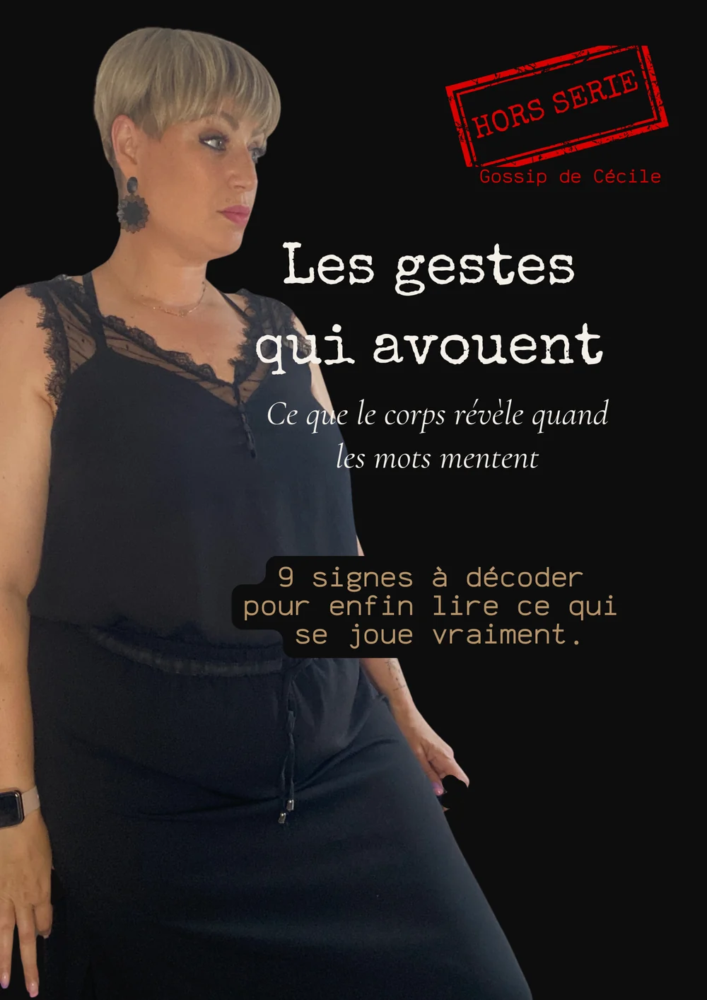

Hors série
Les gestes qui avouent
Ce que le corps révèle quand les mots mentent.
Télécharge gratuitement ce dossier de 25 pages et découvre les neuf gestes qui révèlent ce que les mots ne disent pas.
Envoi immédiat par e-mail · Aucune revente · Désinscription en un clic
Note d'ouverture
Pourquoi ce dossier existe
Tu as déjà senti qu'une personne disait « ça va » alors que tout son corps racontait autre chose.
Ce hors-série t'invite à observer autrement. Tu découvriras neuf gestes qui passent souvent inaperçus, mais qui deviennent de véritables indices lorsqu'ils sont replacés dans leur contexte.
Pièces au dossier — 9
Ce que contient le dossier
-
Indice 01
Le micro-recul
Le buste s'éloigne d'un souffle pendant que la bouche dit oui.
-
Indice 02
La main vers la bouche
Les doigts frôlent les lèvres au moment de répondre.
-
Indice 03
Les pieds ailleurs
Le visage te regarde. Les pieds, eux, cherchent la sortie.
-
Indice 04
Le sourire en retard
Il arrive une seconde après les mots. Un vrai sourire n'attend pas.
-
Indice 05
Le clignement
Le rythme des paupières change d'un coup, sans raison visible.
-
Indice 06
L'auto-contact
La main va au cou, au poignet, à l'alliance. Le corps se rassure.
-
Indice 07
La barrière posée
Un objet déplacé entre vous, au mauvais moment.
-
Indice 08
La déglutition
Une salive avalée sur un mot précis, jamais sur un autre.
-
Indice 09
Le tempo qui décroche
Le corps et les mots cessent de raconter la même histoire.
Avertissement
Avant d'ouvrir le dossier…
Tu risques de reconnaître certains de ces gestes chez toi. Tu risques aussi de les reconnaître chez les autres.
Résiste pourtant à la tentation de tirer des conclusions trop vite. Une enquête ne se résout jamais avec un seul indice.
Elle commence lorsqu'on apprend à relier les éléments entre eux.
Reçois le hors-série
Vingt-cinq pages. Neuf indices. Une manière de regarder.
Envoi immédiat par e-mail · Aucune revente